|
|
|
|
|
From Oman to Aden - Pirate Alley
Written in Luxor, Egypt
Greetings all.
Peter can handle this – sitting in a very comfortable air conditioned bar in a hotel in Luxor, Egypt while the others sweat their way round the Valley of the Kings. Still, have two excuses – firstly, been there, done that – but mainly he’s managed to do some damage to the ligaments in a knee. How did Mr Clumsy do that? Well, for that, we need to go all the way back to Salalah in Oman
Signing into Oman
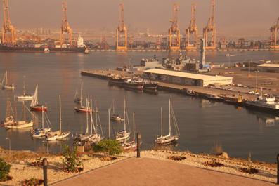 Our last email finished with a couple of beers, sitting Med Moored in Salalah harbour – well, the old harbour – the port is one vast container port with the tall spindly container cranes eviscerating the ships in container sized bites, then scurrying back to re-fill their holds.
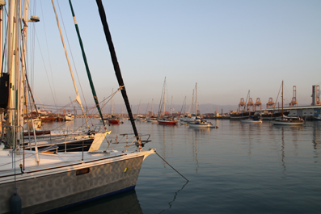 First thing first and that was getting officially into the country. Having asked directions, we headed off for Customs and Immigration and promptly got lost, ending up at the wrong gate. We were devastated when the officer in charge drew us a map and showed us we were a good 2 miles from where we should be – the sun was so fierce it was frying eggs in fridges, let alone on the bonnets of cars.
And here we met the first of many examples of the inherent niceness of the Omani people. After a quick burst of Arabic to his subordinates, he lead us out to his private car and ran us round – and it was clear that any offer of a financial thank-you would have been an insult. As usual, Jean took the opportunity to grab a few basic phrases in Arabic – now we could say, Hello, Good-bye, Please and Thank-you – and it’s amazing where you can get with such a simple start.
Customs and Immigration was heaving – mainly with various crewmembers from the ship arriving to join or depart – and various ex-pats renewing their visas. Customs went through pretty quickly, but the one and only Immigration guy was off somewhere – we settled down to wait.
Eventually, he turned up with his 3 or 4 year
old son in tow and started to wade through the foot high
pile of passports. Meantime, the little one amused himself,
causing a low level outbreak 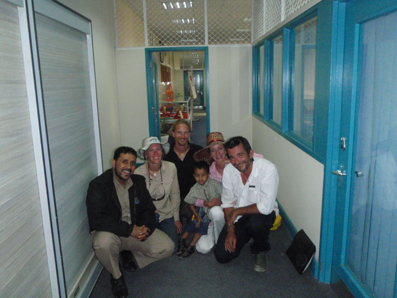
Peter thought this might help get us processed quicker, but in hindsight, it may have had the opposite effect – no way was Dad going to let us go while Jean was doing such a good job playing interference. But we never expected what happened next.
Finally, our passports re-appeared, but we were asked to come round the back – Oh, OH, we thought, what’s wrong here. As it turned out, nothing. Dad simply wanted to take a photo of us (“his saviours?”) and his youngster. Jean, of course, also had to get a picture as well.
Oman and the Rally
Oman was a real shock after the tropical steaminess and greenery of South East Asia. Sand and dust, grays and browns, no grass, light painted building reflecting the sun so they seem to glow. And so so hot, but a dry heat, none of the humidity we had got so used to.
We had come to Salalah because we were joining our first Rally – the Vasco da Gama – run by a lovely Dutchman, Lo. He’s been traveling up and down the Red Sea between Turkey and Cochin, India for years and a few years back, organized a Rally to help other yachts on the south bound route. This was to be his first northbound which had started in Cochin, but with several yachts like us, joining in Salalah.
We launched the dinghy and went in search of his yacht, Mistral. We found him Med Moored in the up-market area – with his stern against a nice concrete wharf, not a pile of rocks as we were. We hailed and went aboard, meeting him, Alex, a young American crewing with him and Yugo, his dog. After exchanging pleasantries, he went through the plans and gave out the first of his very very useful information packs. The best news was that since a few yachts from India were still due in, the start of the Rally had been put back a few days. This was great, because it gave us time to “make and mend” Hinewai, re-stock our supplies and get time to explore.
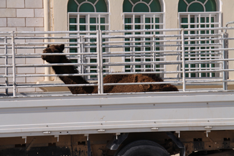 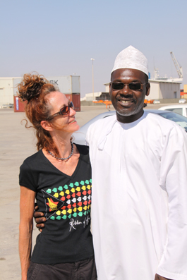 So, for the first time since leaving Australia, we decided to hire a car through Mohammed, the tall stately Agent looking after the Rally. Then realized they drive on the wrong side of the road – every time we came up to roundabouts, we found ourselves both chanting “Look to the left! Look to the left!”
Salalah main town is about 10 miles from the
port so the car proved to be invaluable. And the town
turned out to be an eye-opener. Peter’s only past
experience of the Arabic world was Egypt, 20 years ago – and
he’d have summed it up as dusty, dirty and decrepit. 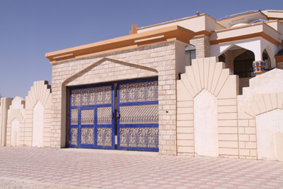
And the people were just so friendly. Many spoke English and loved it when we’d ask for help or directions, we were often caught for half an hour as they enjoyed practicing their English, laughing with us at our stumbling efforts at Arabic. But what was interesting was that most of the service jobs were held by people from the Indian sub-continent.
Tikki touring
It took four or five days to get Hinewai back up to scratch (bar one job – our rudder gland had started to leak – to save time, we had a local “marine engineer” in to strip it down and re-pack it – pah, it started leaking again within 48 hrs of leaving) and to get her supplies topped up. The latter was a joy – we found a western supermarket and were able to get fresh cheese, meat – and things like Branston Pickle again.
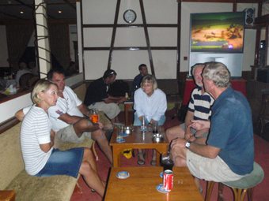 Most evenings were spent up at the Oasis Club – an ex-pats bar about a mile away. The beer wasn’t special, but their steak with 3 melted cheese sauces was to die for. The bar overlooked a little bay where some relative of the Sultan was having his own marina built for his super-yachts.
With all the chores done, we took a day out to explore inland. We knew there wasn’t much to see in the way of antiquities or interesting places, but being us, we could see the escarpment of the Dhofar Mountains rising up to the sky and the start of the desert plateau that runs inland.
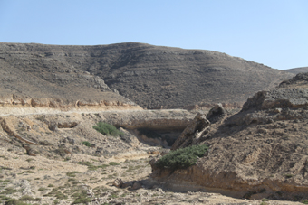
At first, you just drive through past the
airport and some heavily irrigated fields, then start to
climb the winding road. And there is nothing around you –
just rock, sand and desolation – and the odd camels. It got
to the point we 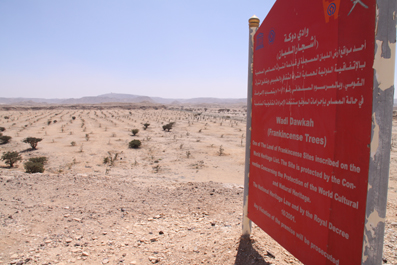
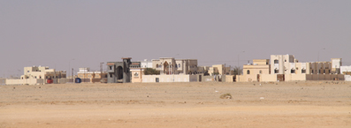 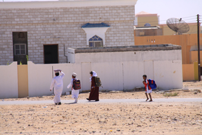
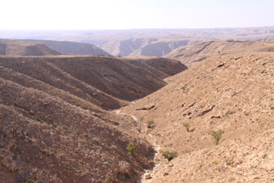 Then back to the boat, taking a less direct route, running along the edge of the escarpment and discovering totally different scenery – still brown and grays, but grand wadis, odd enclosures and lots more camels.
And more camels.
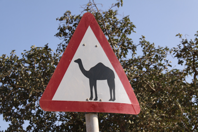
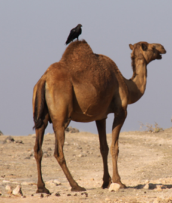
Preparations for the Rally
A couple of nights earlier, there had been the Rally briefing, held up at the Oasis Club. Here Lo outlined his plans for the first part of the Rally, getting through Pirate Alley to Aden, and the rough schedule all the way up to Turkey.
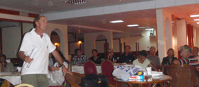 We would be convoying in four groups of six boats, each group being the corner of a rough diamond shape – we were in Group 4, the rearmost group. Each group was allocated its own radio frequency (Ch 77 was the fleet channel) and each boat was allocated a number and we were to use this rather than boat names on this passage (Hinewai was 78). Lo explained how important it was we limited our use of the radio, and used only low power.
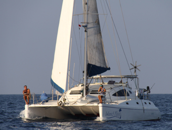 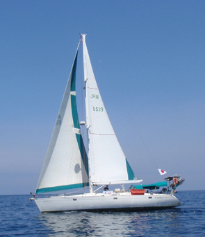 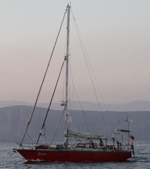
It was funny how on the next night, when the Oasis laid on a BBQ for the Rally, the groups tended to stick together on their tables – which was grand since it was all part of the bonding exercise.
Leaving Salalah, practicing for Pirate Alley – and doing the knee
If we had a penny for every time we have been asked if we’re worried about Pirates – well, we’d be a lot better off than we are. Logically, you know that if you follow a few simple rules – and just statistically (of the 30,000 ships that go through the Gulf of Aden, only 32 were attacked last year) the odds of being targeting are slim. But even so, we were all a little nervous.
Originally, the plan had been that the fleet would leave by 10.00, but Customs and (especially) Immigration threw that idea. Peter spent 5 hours waiting to be processed and it was well after 15.00 before we were ready.
With 24 yachts all trying to leave at once, it was somewhat chaotic in the harbour and since we were well blocked in, we took in two of our stern lines and waited until most had upped anchor and were moving out. Once a few gaps had opened up, Peter pulled himself down the last line to shore and clambered over this rough pile of wet, slippery rocks to where we were tied off. And slipped, loosing his left leg down a deep gap. Apart from a nice long gash down his shin, he twisted a bit as he went down and wrenched his knee.
As ever, being a dumb bloke, he just ignored it and carried on, untying the line and using it to haul himself back to Hinewai where Jean was superbly controlling the yacht, motoring slowly forward to swing us into clear water. We hauled the dinghy on board and tied it off, upped the anchor and headed after the fleet. The knee didn’t feel too bad, so we just cleaned up the gash in the shin (Jean hates blood on the deck).
The next couple of hours were spent getting
the convoy formed up (vaguely like herding cats) and
practicing safety maneuvers. We planned to sail with each
group spread across maybe half a mile – close, but not too
close to each other – and with each group a mile apart. At
the first sign of trouble, Lo would radio a code word
“SWITCH” – each yacht would close to within 50-100yds of the
others in its group while the groups would close up,
hopefully creating a solid group of 24 yachts which would
make it hard to cut one out from and who could offer mutual
support. 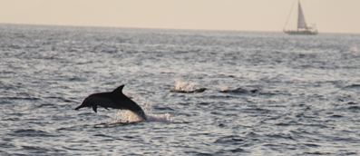
We managed one practice run before dusk fell – and it didn’t go too badly. We even had a few dolphins playing around us showing us how it should be done.
But, after all this time sailing alone, 50yds feels very close and we wondered what it would be like if we had to do it in anger at night.
In to Pirate Alley and the convoy
The first night all went relatively smoothly, but it was an eye-opener how hard it was to maintain formation. With no wind, we were all motoring and there was a huge variation in comfortable speeds. And we had to go at the speed of the slowest and with Cool Change, the smallest yacht only able to make 3-4 kts we were having problems. Our engine, being a turbo, does not like running at low revs for long – the turbo can soot up – and at 3kts, we were having to run it at way too low revs. So we had to stop every now and again, drop back then motor hard back to catch everyone up – cleaning the pipes as we did. We weren’t the only ones having problems and eventually Lo took Cool Change in tow so the fleet could speed up.
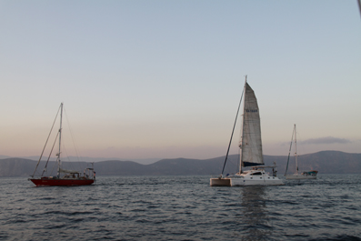 And just holding position was fun – the idea was to stay in position relative to the group leader who would stay in position relative to Lo. Easier said than done – David of Sahula had Auto Pilot problems and ended up hand steering – and had a tendency to wander. This caused great consternation for Harmony IV and there were a number of good natured radio calls like “Where’re you going, Man! Wake up!” and “We have a good diamond shape here – where’s the head gone?”.
We got to the point where we tagged all the yachts in our group on the radar and just hung back – Pirates seemed a safer option. One night, we just gave up and heaved to for a few hours for a leisurely dinner before chasing after the fleet who were now several miles ahead. And were treated to the most incredible light show.
Phosphorus Fish and Dolphins
It was about 0200 and we’d been enjoying some bight phosphorescence from our bow wave and wake for a while when Peter noticed large patches of the seas ahead moving and glowing with this bright ethereal green light. As we came closer, we realized they were shoals of fish which were being driven up to the surface by a pod of dolphins hunting.
We switched off the nav lights, slowed the boat down a bit and each hung over one side – “Oh, Wow! Look at that!”, “Ahhh, beautiful”, “Far out, look at them go”. All around us, the sea was flaring with schools of fish, and when a school came close or went under us, we could see each individual fish glowing with phosphorescence and leaving a trail behind them.
Weaving in and out were the dolphins – it seemed like there were hundreds of them – each this glowing green torpedo leaving a twisting and turning trail of green diamonds behind it – sometimes close to the surface, lighting the water up, other times sounding leaving a trail dimming behind them as they went down, sometimes accelerating with a powerful flick of their tail, the green glow becoming a green light as if a switch had been shown. Or just leaping out of the water, landing in an explosion of green light, often close enough to light up the sails.
And, of course, playing. At all times we had a few dolphins who were tired of this hunting lark and wanted nothing more than to play in our bow wave.
This show went on for more than an hour, but slowly and regretfully, we started to pull ahead. Danger time in the area is dawn and we wanted to be back with the fleet by then. As we moved away, we could still see the sea boiling in green light – it had been one of the greatest experiences we had had since leaving home.
Fuel stop and the risky bit
The winds had proved to be unseasonably
fickle – deciding they were not coming out to play. This
had left some of the smaller yachts too low on fuel to make
Aden so Lo decided to make a stop at Al Shi’ir (originally,
an overnight stop had been planned at Al Mukalla, but the
officials there had got greedy and were threatening to make
a substantial charge for any yacht coming in so they lost
out). 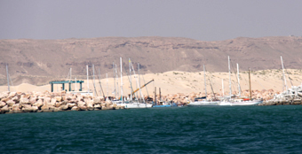
Al Shi’ir is a little fishing village, but tucked behind a modern rock breakwater. Most of the yachts headed in, rafting up and more or less filling the harbour, but since we still had plenty of fuel, we decided to stay out with a couple of other yachts, dropping the hook a couple of hundred yards out. Feet up in the cockpit, out came our books and we drifted off to sleep.
Only to be woken by a hail from a small, pretty rough looking boat with a couple of uniformed officials tell us we had to move. Move all of a couple of hundred yards. We have no idea why, we weren’t blocking any channel – well out of the way – but when you’re told by a bloke with a couple of young uniformed kids with AK-47’s to move, you move. We noticed they went round each yacht who was anchored off and made us all move a pissy little amount. Maybe it was a lesson for not having come in to spend money there.
Awake now, we listened over the radio with amusement at the negotiations for the fuel. In total, it was a fair amount, but split across many boats – and was all going to have to carried in jerry cans. A major swop and borrow of cans was going on as Lo sorted out the costs. But at last, everyone was happy, fueled up and the fleet started to come out.
To all our surprises, we found we were starting to get this convoy game together, forming up quickly and heading off. Lo had warned us we were coming now in the most risky area.
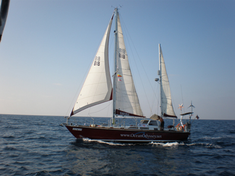 Most single yachts or small groups coming through the Gulf of Aden were heading through the Safety corridor with the big ships being protected by numerous warships. However, Lo, in consultation with the Coalition headquarters and the Yemini authorities, had decided to stay in close to the Yemen coast. I must admit to having had a few misgivings since, while it is the Somali’s who get all the attention, there a quite a few Yemeni fishermen who either give the heads-up to the Somali’s with a juicy target or get involved themselves.
And when you see the Yemeni fishermen in their boats, they can be quite scary. The boats and long, narrow, low-slung and open decked – maybe 20 feet long – and powered by a couple of big outboards. They fly. The 3 or 4 people aboard stand, hanging onto a piece of rope attached to the bottom – for anyone who has ever read Dune, it reminded Peter of the Fremen riding the worms.
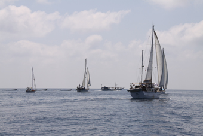 Over the next day, we saw many of these boats – just a dot on the horizon first very quickly become bigger. Most just passed us by, but some came in through the fleet. We warily kept an eye on them, but all they wanted to do was have a look-see and swop a wave.
Only once did Lo feel the need to call “SWITCH”. A much bigger boat appeared towing several of these smaller boats, and it clearly made a turn to approach the fleet. We were all pretty impressed with ourselves at how quickly we all came together – blow the 50 yards apart when for real, we were all within 20 yards. The big boat came right in, crossing our path so close that Lo called for everyone to stop else they would have driven through the group. Like us, I think everyone had something to hand – in our case it’s an axe haft – probably no use against an AK-47, but it makes you feel better.
An eventful last night before arriving in Aden
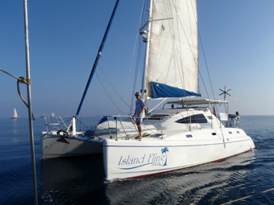 With just one day to go, everyone was looking forward to Aden but the wind dropped out so Island Fling took the opportunity to come alongside and deliver some succulent tuna steaks from one of the many fish they'd caught.
Just as well we were well fed that night. Suddenly, Sahula and Harmony IV came on the radio – they had both run over the same long line and fouled their propellers’ – we were a few hundred yards behind so slammed the rudder over and stopped. These long lines are a bugger – with a hook baited with old fish heads or other offal every 20 feet or so, they stretch for miles – this one must have broken away from the fishing boat – maybe miles away and was just drifting – a killing machine with no purpose. Lo had a chat with the two boats and ordered the fleet to stop while they tried to clear their propellers’.
About that time, we all realized that one of the yachts Rhino was missing – and wasn’t answering calls on the VHF. Like us, they had got into the habit of dropping back, then motoring hard to catch up, but never before had they been out of range. Since we were right at the back, we volunteered to head back to see if we could find them. Thankfully, after a few miles, they came in range of the VHF – Yes, all was fine, they had just stopped for a bit. Glad to have found them, but a little miffed they’d allowed themselves to get so far out of touch, we returned to the fleet and found both Sahula and Harmony IV had managed to free themselves. Once Rhino got back in radio range, the fleet headed on.
We were stopped again later that night, but this time intentionally. At last, we were close to Aden, but could not all try and enter at once. Slowly, we peeled off and started the last bit of the trip, each boat calling up Aden port control on the radio requesting permission to enter. The poor blokes – they’d have just finished with one yacht when the next would call them up.
Dawn had well broken as we approached the breakwater that marks the entrance to Aden harbour. It was an odd feeling as we passed the old naval shipyards and remembered all the stories we’d heard as kids about how vital Aden had been – and what great ships had once been moored there. And sadly, better remembered today as being the place where the USS Cole was bombed a few years back. The two frigates, part of the shipping defense force, that were refueling there were well protected, it looked like the machine guns were manned up on the decks with a few RIBS motoring around with some heavily armed chaps on board. We had been warned that we would be fired upon if we started to approach them.
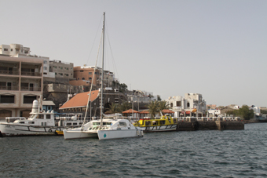 All we did was pass them by and on into the anchorage next to the Prince of Wales pier. And it was packed so we ended up anchoring a fair way down (we were moved on the next day – apparently there were uncharted cables where we were – we waited with trepidation to see what our anchor was bringing up (thankfully nothing) – luckily as we moved, another yacht was leaving so we nipped in to their space right next to the pier).
Aden insists on prompt paperwork, so we dropped the dinghy over the side and headed ashore. Immigration were a job – a neat little building just to the left of the PoW, nice blokes, neatly attired. As ever, delighted at our sad attempts with our few words of Arabic.
Then Customs, and our first experience of what, Oh so much of Aden was like. Behind a tatty door, we disturbed this grubby little man, wearing foul, filthy clothes, sleeping on a grey mattress by his desk, his cheek bulging with qat. Communication was impossible, we don’t speak “Grunt”, but he sourly stamped our papers. And then demanded a US$25 gift. We apologized, saying we had no US money on us, that we hadn’t yet had time to get any Rials – but, of course, that we would come back with his gift. OK, we lied.
But we had reached Aden – we were safely through Pirate Alley – and with the flare up in activity recently, just in time. We had fours days here before we would be heading off again for the final 100 or so miles to Bab al Mandab and the start of the Red Sea. Soon, after ticking off the latitudes with little change in longitude for the last few months, we’d be notching off the northlings.
But more of that in the next email
Hugs
Peter & Jean
Next Log Page: From Aden to the Red Sea - and some unexpected excitment
|
|
|
|
|
|
|
|
The Crew The Route The Yacht The Log Guestbook Links Contact Us |
|
|
|
|
|
Home |
|
|
All Original Content of this Web Site Copyright © 2000, 2001, 2002, 2003, 2004, 2005, 2006, 2007, 2008, 2009 Ocean Odyssey Pty Ltd |